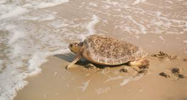
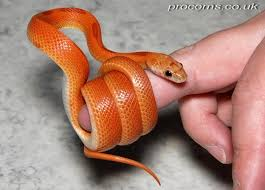
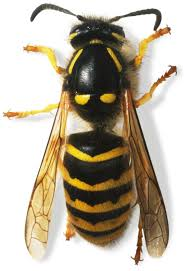

 Turtles are diapsids of the order Testudines (or Chelonii[3]) characterized by a special bony or cartilaginous shell developed from their ribs and acting as a shield.[4] "Turtle" may refer to the order as a whole (American English) or to fresh-water and sea-dwelling testudines (British English).[5] The order Testudines includes both extant (living) and extinct species. The earliest known members of this group date from the Middle Jurassic,[1] making turtles one of the oldest reptile groups and a more ancient group than snakes or crocodilians. Of the 356 known species[2] alive today, some are highly endangered.[2]
 Snakes are elongated, legless, carnivorous reptiles of the suborder Serpentes.[2] Like all other squamates, snakes are ectothermic, amniote vertebrates covered in overlapping scales. Many species of snakes have skulls with several more joints than their lizard ancestors, enabling them to swallow prey much larger than their heads with their highly mobile jaws. To accommodate their narrow bodies, snakes' paired organs (such as kidneys) appear one in front of the other instead of side by side, and most have only one functional lung. Some species retain a pelvic girdle with a pair of vestigial claws on either side of the cloaca. Lizards have evolved elongate bodies without limbs or with greatly reduced limbs about twenty-five times independently via convergent evolution, leading to many lineages of legless lizards.[3
 Insects or Insecta (from Latin insectum) are hexapod invertebrates and the largest group within the arthropod phylum. Definitions and circumscriptions vary; usually, insects comprise a class within the Arthropoda. As used here, the term Insecta is synonymous with Ectognatha. Insects have a chitinous exoskeleton, a three-part body (head, thorax and abdomen), three pairs of jointed legs, compound eyes and one pair of antennae. Insects are the most diverse group of animals; they include more than a million described species and represent more than half of all known living organisms.[2][3] The total number of extant species is estimated at between six and ten million;[2][4][5] potentially over 90% of the animal life forms on Earth are insects.